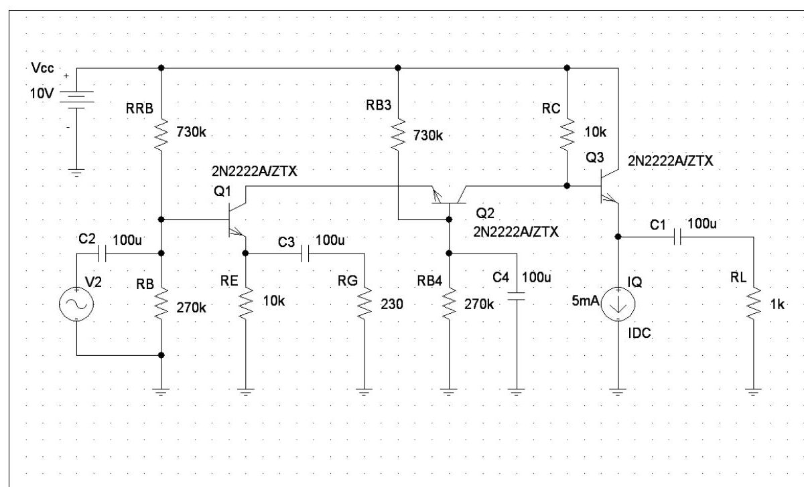
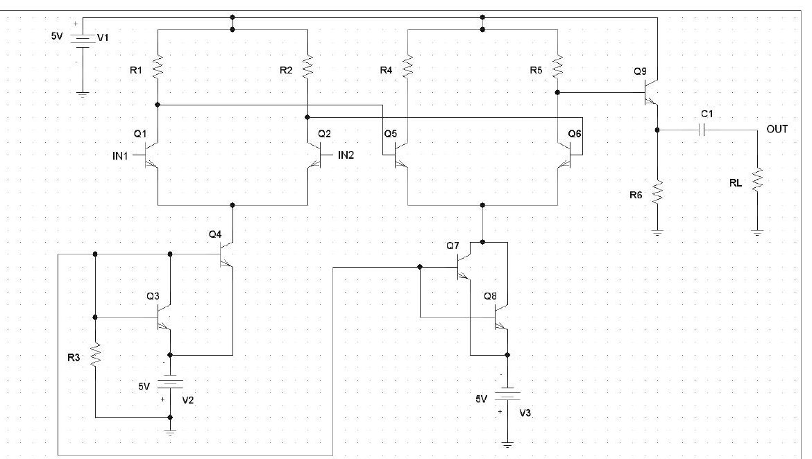

· EEM311
EEM311 Elektronik II: 2010 Güz Ödevleri, Çok Katlı BJT Yükselteci ve İki Katlı Fark Yükselteci Tasarımı
EEM311 – Elektronik II · 26.10.2010 · 16.10.2026
Bu yazı, Başkent Üniversitesi Elektrik-Elektronik Mühendisliği EEM311 Elektronik II dersinin 2010 güz döneminde verilen iki ödevini içeriyor: Ödev I (26 Ekim 2010) ve Ödev II (28 Kasım 2010). Ödev kâğıtlarında yalnız sorular ve devre şemaları var; çözüm yok. Soruların metni aşağıda, devre şemaları ödevlerden alınan görsellerle veriliyor. İki ödevin orijinal PDF'leri yazının sonunda ZIP olarak indirilebilir.
Ödev I
1) Aşağıdaki devre için:
- a) giriş ve çıkış empedanslarını,
- b) voltaj kazancı A_v'yi,
- c) sıfırdan tepeye kesilmemiş salınımı (zero-to-peak unclipped swing) bulunuz.

Devredeki eleman değerleri:
| Eleman | Değer |
|---|---|
| V_CC | 10 V |
| Q1, Q2, Q3 | 2N2222A/ZTX |
| RRB, RB3 | 730 kΩ |
| RB, RB4 | 270 kΩ |
| RE | 10 kΩ |
| RG | 230 Ω |
| RC | 10 kΩ |
| C1, C2, C3, C4 | 100 µF |
| IQ (Q3 emetör akım kaynağı) | 5 mA |
| RL | 1 kΩ |
2) Sinyali bozmadan aşağıdaki koşulları sağlayacak devre için gereken direnç ve akım değerlerini hesaplayınız:
- V_CC = 10 V
- R_L = 1 kΩ
- |A_v| = 200
- R_in ≥ 3 kΩ
- V_out'taki kesilmemiş salınım ≥ 2.5 V
- V_E1 ≥ 1 V
Ödev II

- Diferansiyel mod kazancı 100 ile 150 arasında olan yukarıdaki iki katmanlı diferansiyel amfiyi tasarlayınız (C1 = 100 µF ve R_L = 10 kΩ).
- Transistörlerin DC bias noktalarını hesaplayınız, her bir direnç ve transistörün işlevini açıklayınız.
- CMRR değerini hesaplayınız.
Şemada birinci katın (Q1–Q2) iki kolektör çıkışı ikinci katın (Q5–Q6) bazlarını sürüyor; her iki katın kuyruk akımı birer BJT akım aynasıyla (Q3–Q4 ve Q7–Q8) sağlanıyor, Q9 ise tek uçlu çıkışı R_L yüküne aktaran emetör izleyici katı. Fark yükselteçlerinin kazanç ve CMRR bağıntıları için arşivdeki "EEM311 Elektronik II: Deney 7–8" yazısındaki fark yükselteci föyüne bakılabilir.